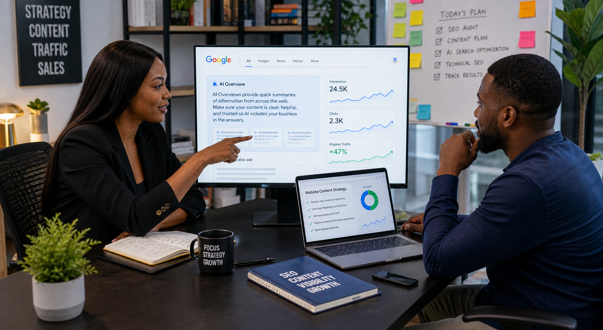

If your business is being seen but not chosen in AI search, the problem is usually not visibility alone. The problem is that your pages are not clear enough, trusted enough, or buyer-friendly enough to become the answer people feel safe acting on.
Seen is not the same as chosen anymore
For years, many businesses treated search like a traffic game. Show up. Get the click. Hope the page does not embarrass everybody involved. But AI search is making that older game feel incomplete.
Now a customer can ask a layered question, read a summary, compare options inside an AI response, and decide who sounds credible before your page ever gets a proper chance to perform. That means your business is no longer only competing for rank. It is competing for recommendation, trust, and interpretability.
That is a more emotional competition. Because people do not choose the brand that merely exists. They choose the brand that feels easiest to understand, safest to trust, and clearest to move forward with.
This shift is already measurable
On March 5, 2025, Google said AI Overviews were already being used by more than a billion people and also introduced a broader AI search experience through AI Mode. Then a May 2026 study measuring Google AI Overviews found AI Overview activation rose sharply for question-style searches, reaching 64.7% on that query type. That matters because real buyers do not search like robots. They search like worried humans.
They ask things like “which agency is best for a Lagos business,” “how much should SEO cost in Nigeria,” “is this brand reliable,” or “what should I fix before running ads.” Those are not just keywords. Those are decision moments.

Why brands get skipped even when they are technically visible
1. The messaging sounds like everybody else
If your page says “we deliver innovative solutions” and “we help businesses grow” and “we are passionate about excellence,” congratulations: your copy has joined a witness protection program. Nothing is wrong with being professional. Everything is wrong with being impossible to remember.
AI systems pull toward clarity. Buyers do too. If your positioning is broad, vague, or interchangeable, you are easier to summarize around than choose.
2. The page does not answer the main question fast enough
Strong AI-search-ready pages usually make the core answer visible early. Weak pages hide it under throat-clearing, recycled introductions, and generic self-praise. If a user wants to know what the service is, who it is for, what it costs, or what makes it different, your page should not behave like it is protecting state secrets.
3. The trust signals arrive too late
By the time many businesses finally mention proof, the visitor has already emotionally left. Buyers want confidence cues early: category experience, recognisable outcomes, specific use cases, credible media mentions, sensible FAQs, and pages that feel like they were written by people who actually know what they are doing.
4. The page is built for ranking, not decision-making
This is where many businesses quietly lose. They create content to attract traffic, but not content that helps a buyer decide. AI search makes that weakness more painful because the competition is no longer just another page. The competition is a better answer.

What Nigerian businesses should fix first
Start with your money pages
Do not begin with random blog excitement if your core service pages still sound like they were written in a hurry. Your homepage, service pages, city pages, pricing pages, and key comparison pages should become the cleanest explanation of your business.
Give short answers before deep explanations
The best pages now respect scanning behavior. Put the direct answer near the top, then expand with detail, proof, examples, and FAQs below. This helps both AI systems and human readers understand the page faster.
Strengthen entity and trust consistency
Your brand name, offer, service area, proof, and positioning should not feel confused across the site. If one page says one thing, another page says another, and your external mentions say something else, you are making it harder for search systems and buyers to trust the same story.
Write for comparisons, not just definitions
Many buying journeys are comparison-led now. People ask who is better, what to choose first, what costs more, what works in Lagos, what works in Abuja, what is worth the budget, and what to avoid. If your content does not meet those moments, you stay visible but under-selected.
Use proof that feels specific
Specific beats dramatic. Mention the business type, the use case, the context, the market, the problem, and the kind of result or transformation. “We help businesses grow” is not proof. “We help ecommerce brands structure content, ads, and follow-up so traffic has a better chance of converting” is at least starting to behave like proof.
The new goal is not only ranking. It is recommendation readiness.
This is where GEO, AEO, and traditional SEO start behaving like relatives instead of separate tribes. Your business needs pages that can rank, yes. But it also needs pages that can be extracted, trusted, summarised, compared, and recommended.
That usually means:
- clear service definitions instead of fluffy wording
- buyer-question formatting instead of random topic dumping
- strong internal links so the topic network makes sense
- local and commercial relevance for Lagos, Abuja, and Nigeria-wide searches
- helpful FAQ blocks that answer real concerns
- credible proof signals that reduce hesitation
- clean calls to action that tell the reader what to do next
What this should mean for your business right now
If your brand is not being chosen, do not only ask, “How do I get more impressions?” Ask the more uncomfortable question: “If a buyer lands here after hearing about us from search or AI, have we made the decision easier or harder?”
That is the real test.
Because a page can be indexed, technically optimized, and still underperform where it matters most: confidence. And confidence is often what closes the gap between a brand being considered and a brand being contacted.
How WTB helps businesses fix this
WTB helps businesses tighten the full chain: clearer pages, better search intent coverage, stronger answer blocks, more useful blog support, local relevance, cleaner proof, sharper CTAs, and a website that sounds more like a real market advantage than a collection of marketing phrases.
If your business wants to become easier for Google AI, ChatGPT, Gemini, and real buyers to understand and recommend, the answer is usually not “publish more random content.” It is “build stronger decision pages and support them with smarter content.”
Sources behind this article
This article draws on Google’s official Search update from March 5, 2025 and the May 2026 study Measuring Google AI Overviews: Activation, Source Quality, Claim Fidelity, and Publisher Impact.
FAQ
What is the difference between being visible and being chosen?
Visibility means your business appears somewhere in the discovery path. Being chosen means your page, brand, or explanation feels trustworthy and useful enough for the buyer to act on.
Does AI search replace normal SEO?
No. It raises the standard. Pages still need SEO, but they also need stronger clarity, proof, structure, and buyer relevance.
What pages should a business improve first?
Start with the homepage, top service pages, local service pages, pricing pages, and the articles most likely to influence a buying decision.
Can WTB help with GEO, AEO, and AI-search visibility?
Yes. We help businesses shape pages and content so they are easier to rank, easier to extract, easier to trust, and easier to convert from.
Want your brand to feel easier to choose?
If your business wants help with AI-search visibility, answer-engine readiness, SEO structure, commercial content, or stronger service-page messaging, start with our contact page, review our SEO Agency Nigeria page, or book a strategy call.